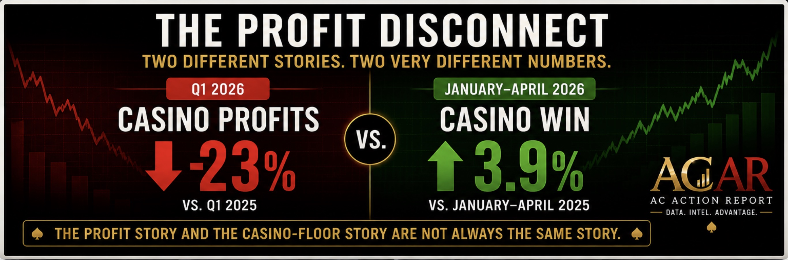
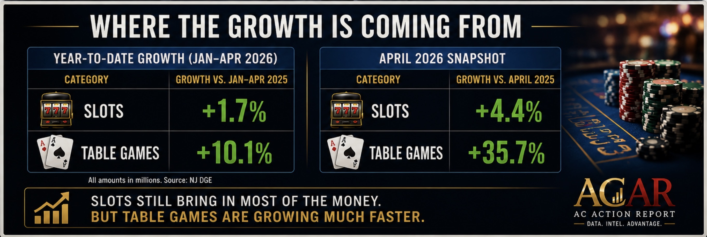

AC Action Report Analysis
Estimated Reading Time: 5 Minutes
Recent headlines about Atlantic City have focused on one number:
Casino profits fell 23% during the first quarter of 2026.
At first glance, that sounds alarming.
If you only read the headlines, you might assume Atlantic City's casinos are struggling, casino floors are empty, and players are staying home.
But there is another set of numbers telling a different story.
Through April 2026, Atlantic City casino win reached $888.5 million, up 3.9% from the same period last year.
Slots generated $644.0 million, up 1.7%.
Table games generated $244.5 million, up 10.1%.
So how can profits fall while casinos are winning more money?
The answer is that the profit story and the casino-floor story are not always the same story.

Casino win is the amount casinos kept from slot machines and table games.
For regular players, it is often the closest thing we have to a scoreboard for what is happening on the casino floor.
When casino win rises, it usually means more money is moving through slot machines and table games.
That doesn't guarantee every casino is packed.
But it often lines up with what players notice:
Because profit and casino win track different things.
Casino win tells us what happened on the gaming floor.
Profit tells us what was left after everything else was paid for.
Employees.
Utilities.
Marketing.
Property upkeep.
Technology.
Debt payments.
A casino can win more money on the floor and still make less money at the end of the quarter.
Both things can be true at the same time.
One of the more interesting trends in 2026 is where the growth is coming from.
Slots still account for most of Atlantic City's casino win.
But table games are growing much faster.
Through April:
In April alone, table game win increased 35.7% compared with the same month last year.
Slots remain the engine.
But table games are doing much of the heavy lifting right now.

The profit headlines are real.
The casino win numbers are real too.
Neither side is wrong.
But they are telling different stories.
One story is about how expensive it has become to run a casino.
The other story is about what is actually happening on the casino floor.
And right now, the casino-floor story looks a lot stronger than many of the headlines suggest.
Related Reading:
ACAR publishes Atlantic City & Regional Casino Intelligence, including casino-floor observations, promotion trackers, slot analysis, rewards-program coverage, and major casino-industry developments affecting players.